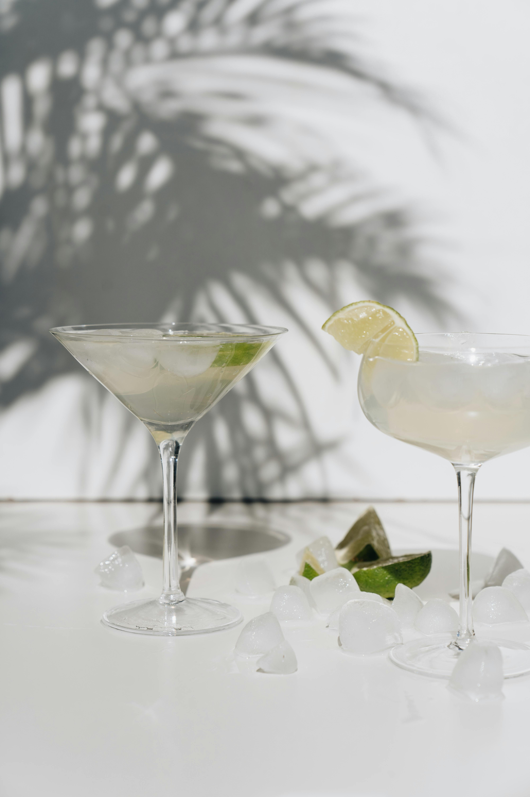

Ingredients
• 2 Oz tequila
• 1 Oz triple sec
• 1 Oz lime juice
• Salt (for rimming the glass)
Steps
1. Rim the glass with salt by moistening the rim with a lime wedge and dipping it in salt.
2. In a shaker with ice, combine tequila, triple sec, and lime juice.
3. Shake well and strain into the prepared glass over ice.
Back to Home